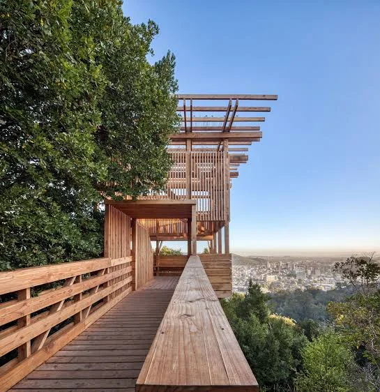
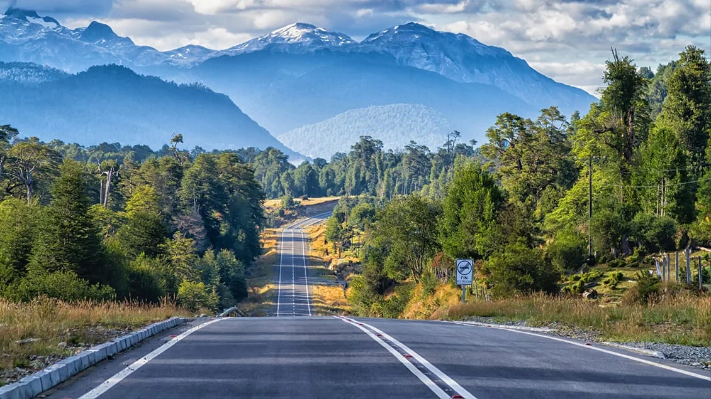
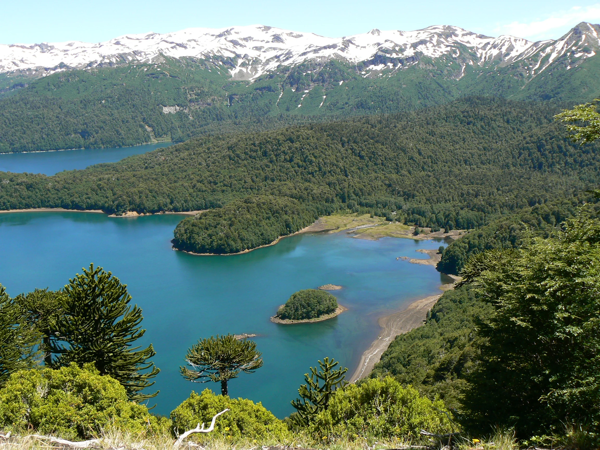
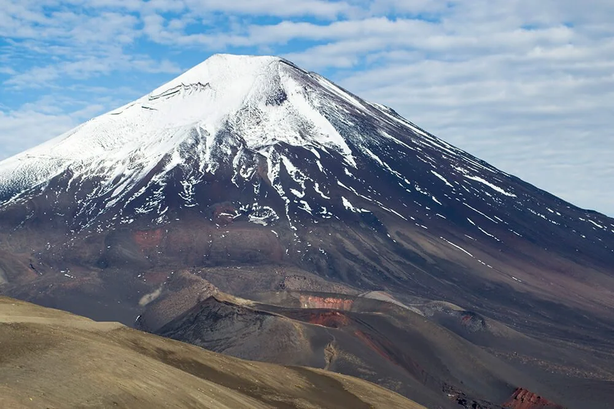
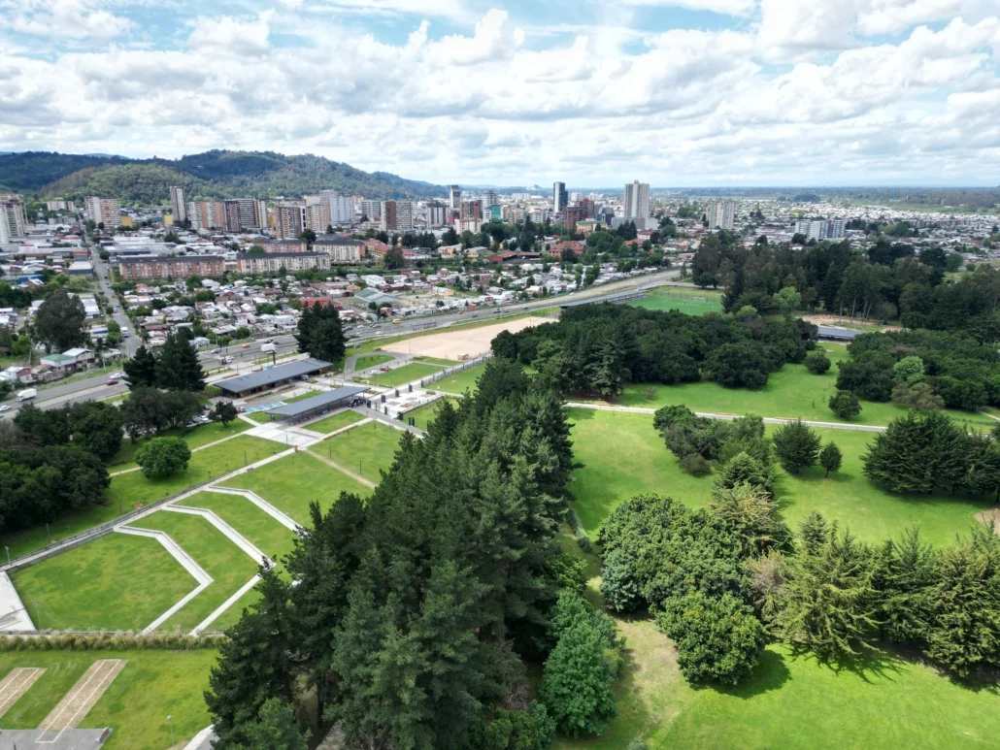
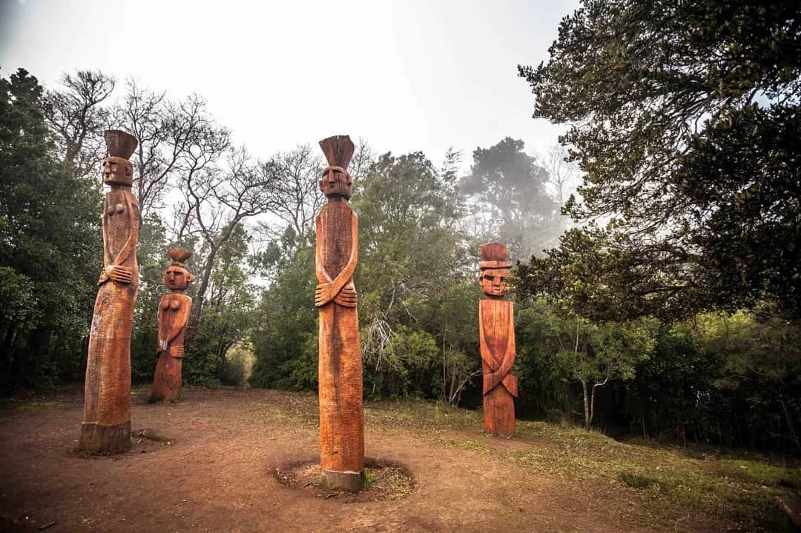

Cerro Ñielol
Admira vistas panorámicas de la ciudad de Temuco desde este impresionante cerro.

Explora los mejores senderos, parques naturales y miradores de la región.

Admira vistas panorámicas de la ciudad de Temuco desde este impresionante cerro.

Recorre senderos rodeados de naturaleza y disfruta de vistas panorámicas de la región.

Camina por un sendero ecológico rodeado de flora y fauna nativa.

Disfruta de este espacio verde ideal para caminatas y actividades al aire libre.

Conoce la historia y la cultura de Temuco en este emblemático monumento.

Explora la belleza natural de la Reserva Nacional Malalcahuello, un destino ideal para los amantes de la naturaleza y el senderismo. Disfruta de sus paisajes impresionantes y su rica biodiversidad.